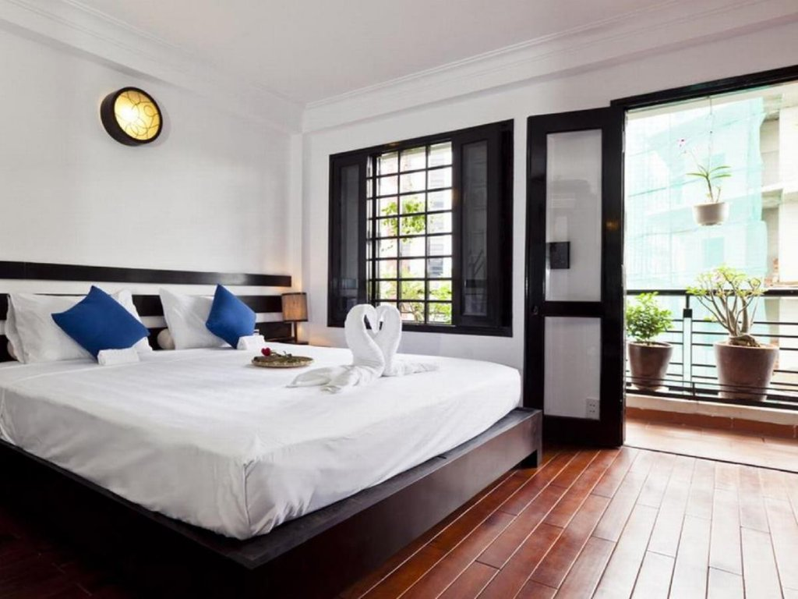
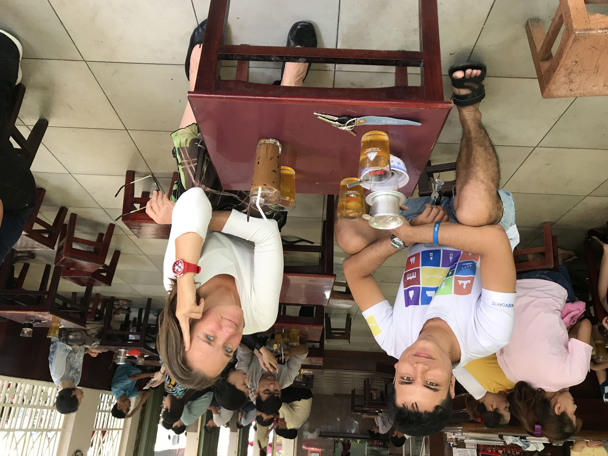
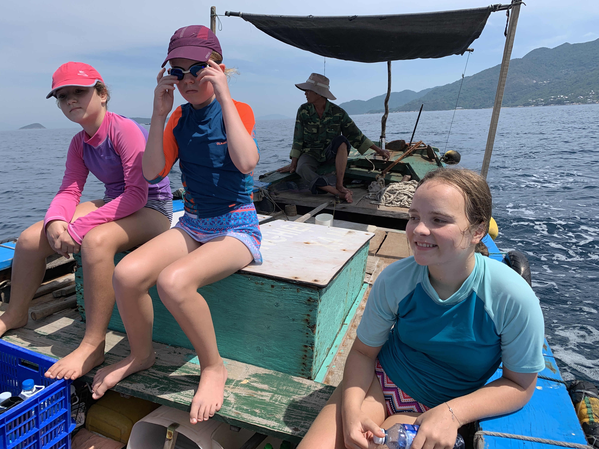

Conseils pour voyager au Vietnam
Récemment, un ami m'a demandé des conseils pour voyager au Vietnam : Un de ses amis souhaitait se rendre au Vietnam pour 10 jours (!!). Les conseils que j'ai rassemblés à cette occasion, je les ai partagés au moins 5 fois depuis. C'est pourquoi je les écris ici. Et donc sous forme de dialogue...
Salut Till - un jeune collègue à moi part mi/fin novembre avec un copain pour 10 jours au Vietnam. Jusqu'à présent, ils n'ont pas de plans concrets. As-tu quelques conseils sur ce qu'un touriste doit absolument voir au Vietnam ? Merci d'avance. Amicalement
Ouf, ce n'est pas si simple. Cela dépend de ce qu'il aime : plutôt ville, nature, fête, musées...
Il atterrira très probablement à Hanoï ou Saïgon. Il devrait de toute façon visiter la ville respective - et probablement dormir pour récupérer du décalage horaire.
- Cinnamon Cathedral Hotel38 Ấu Triệu, Hàng Trống, Hoàn Kiếm, Hà Nội, Vietnam+84 24 3938 6761
- Cinnamon Hotel Saigon74 Lê Thị Riêng, Phường Phạm Ngũ Lão, Quận 1, Hồ Chí Minh, Vietnam+84 28 3926 0130

Hôtel à Hanoï & Saïgon où j'aime descendre. Très sympa, petit (je n'aime pas les grands complexes), vietnamien, super central...
Dans les deux villes, la règle d'or est : MANGER ! Street food, plats typiques à chaque fois. Tout essayer, être audacieux 😂Pour se déplacer : Grab bike. C'est comme Uber. Installer l'application, cliquer sur la carte, un scooter arrive. On s'assoit à l'arrière et on voit tout d'une perspective vietnamienne. La voiture est juste bloquée dans les embouteillages.
À Saïgon, j'ai fait une superbe Vespa Tour dans le delta du Mékong. Une journée entière, à l'arrière d'une Vespa. Les tours existent aussi à Hanoï et Hoi An : Vespa-Adventures
Café : Le VN est le plus grand producteur de café au monde. Ils ont une culture du café très particulière. Ils boivent le Coffee Phin. Un jeune cultivateur de café des hauts plateaux (Da Lat, également très intéressant à voir) a le coffee shop le plus cool de Saïgon : The Workshop Coffee27 Ngô Đức Kế, Bến Nghé, Quận 1, Hồ Chí Minh, Vietnam+84 28 3824 6801

À noter : le café n'est authentique que si l'on est assis sur des tabourets beaucoup trop petits à des tables beaucoup trop petites ;)
Les points forts en matière de nature pour nous étaient le Nord : Montagnes, Jungle, magnifique. Sa Pa est le Chamonix du VN : la ville est horrible, mais de là partent de belles excursions. Le Fansipan, le plus haut sommet du VN, est considéré comme le dernier sommet de l'Himalaya. Désormais, il y a aussi une télécabine qui monte. Mais c'est assez bondé. Nous avons préféré le Nord-Est : moins de touristes, plus authentique. L'endroit s'appelle Ha Giang. À visiter de préférence en scooter, si on ose. Si l'on veut y faire de la randonnée, le Panhou Village est une excellente base (on y trouve aussi des guides). Ecolodge Panhou VillageThông Nguyên, Hoàng Su Phì District, Ha Giang, Vietnam+84 96 661 50 50
Notre région était la plage : le Centre-Vietnam, avec Đà Nẵng et Hội An. Đà Nẵng est vietnamienne, ville moyenne. Hội An est classée au patrimoine mondial de l'UNESCO, donc pleine de touristes. En plus des sites typiques des guides, notre point fort était la Plongée. On peut aussi le faire en tant que non-plongeur, pour découvrir et essayer. Si vous plongez, dites que vous venez de la part de Till - le service sera plus sympathique et moins cher. Chaque Dive Master réagit à ce nom 😀 Vietnam Scuba Diving

Au nord du Col des Nuages se trouve l'ancienne cité impériale de Huế. Très agréable - encore une fois, la nourriture. En plus du palais, de la rivière des Parfums et des lieux standards, cet hôtel est très recommandé : luxe du siècle dernier, service très sympathique, directement sur la plage... Villa Louise Huế - Beach Hotel and Spathôn Hòa Duân, Phú Vang District, Thua Thien Hue 530000, Vietnam+84 91 767 36 56 Entre Đà Nẵng et Huế, le train est recommandé : on voit beaucoup, on peut discuter avec les Vietnamiens - et acheter de la nourriture délicieuse aux vendeurs ambulants dans les gares.
En continuant encore plus au nord en train, on arrive à Đồng Hới : dans cette région se trouvent les plus grandes grottes du monde. Nous y sommes allés 4 fois, avons visité différentes grottes, certaines TRÈS aventureuses. Meilleurs guides et équipements : Oxalis
10 jours ?? Ce n'est jamais assez pour le VN 😂 Voilà, je suis dans le bus de Prague à Munich et j'ai maintenant envie de manger vietnamien... Amicalement, Till.